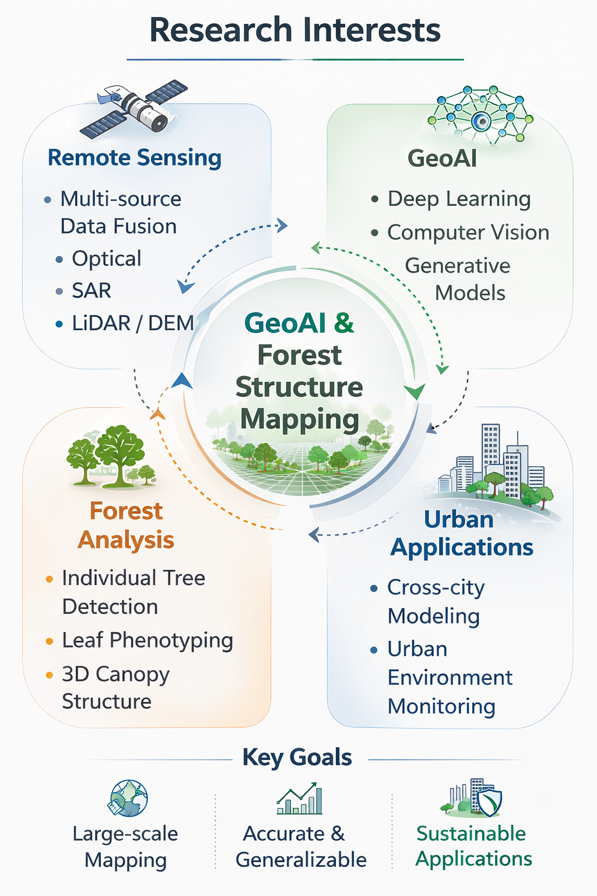

Taige Luo
M.S. Student in Geography
I am Taige Luo from Nanjing, Jiangsu, China. My research focuses on the intersection of remote sensing and artificial intelligence, with an emphasis on vegetation structure understanding and large-scale geospatial mapping.
During my undergraduate studies at Nanjing Forestry University, I worked under the supervision of Dr. Sheng Xu on forestry remote sensing research. My work mainly focused on individual-tree level analysis, including fine-grained individual tree crown detection, individual tree density estimation, and intelligent leaf phenotyping using computer vision techniques.
I am currently pursuing a Master’s degree in Geography at Virginia Tech under the supervision of Dr. Yang Shao. My current research focuses on large-scale remote sensing mapping, particularly cross-city applications. I work on integrating multi-source remote sensing data, including optical imagery, SAR radar, and LiDAR-derived elevation data, to perform three-dimensional forest canopy mapping and improve the reliability of large-area vegetation products.

Research Interests
- GeoAI and deep learning for remote sensing
- Individual tree detection and forest structure analysis
- Multi-source remote sensing fusion using optical, SAR, and LiDAR data
- Large-scale vegetation mapping and cross-city generalization
- Three-dimensional forest canopy structure modeling
- Intelligent vegetation phenotyping and geospatial product generation
Education
Virginia Tech
Teaching Assistant
Principles/Elements of GIS (GEOG 5064)
Virginia Tech
M.S. in Geography
Advisor: Dr. Yang Shao
Focus: Large-scale remote sensing mapping, cross-city applications, multi-source data fusion
Nanjing Forestry University
B.S. in Software Engineering
Advisor: Dr. Sheng Xu
Focus: Individual tree crown detection, density estimation, intelligent leaf phenotyping
Honors & Awards
- Virginia Tech Department of Geography Scholarship (Full Tuition Waiver + Teaching Assistantship)
- Recommended for Graduate Admission Without Entrance Examination (Top 5%)
- Meritorious Winner, Mathematical Contest in Modeling (MCM/ICM)
- Second Prize, China Computer Design Competition
Work Experience
Virginia Tech
Graduate Researcher
Conducting research on large-scale vegetation mapping and cross-city remote sensing applications. Integrating optical imagery, SAR radar, and LiDAR-derived elevation data for 3D forest canopy mapping and robust geospatial product generation.
Nanjing Forestry University
Undergraduate Research Assistant
Worked on forestry remote sensing and individual-tree level analysis, including fine-grained crown detection, tree density estimation, and intelligent leaf phenotype extraction using computer vision and geospatial data processing methods.
Related Topics
GeoAI / Remote Sensing / Forestry Informatics
Interested in building robust AI models for forestry remote sensing, vegetation structure understanding, and large-area mapping across heterogeneous urban and ecological environments.